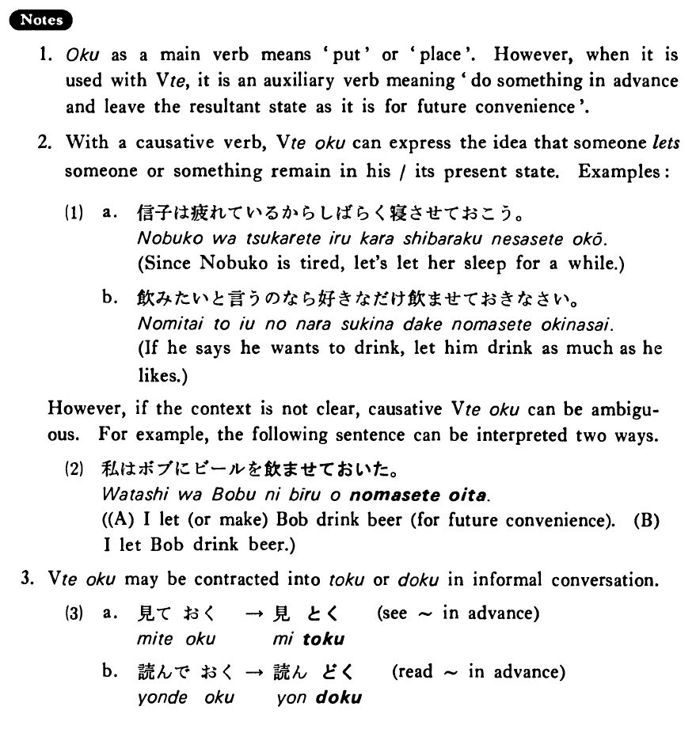

おく (B. 357)
- (ks).
- 明日パーティーをするのでビールを買っておいた・おきました。
- Since we are having a party tomorrow, I bought some beer for it.
- (a).
- 今日は昼に客が来るので昼ご飯を早目に食べておいた。
- Since I'm having a guest at noon today, I had my lunch earlier.
- (b).
- 来年日本へ行くから少し日本語を勉強しておきます。
- Since I'm going to Japan next year, I will study a little Japanese ahead of time.
